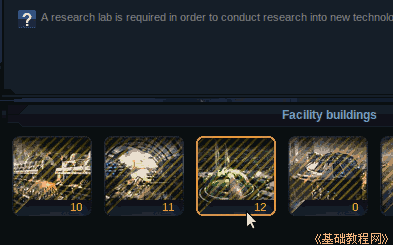
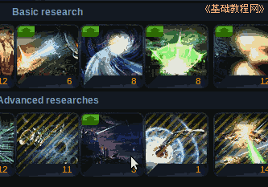
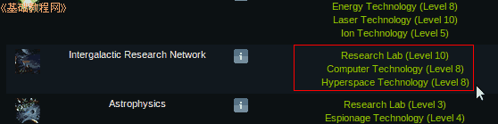
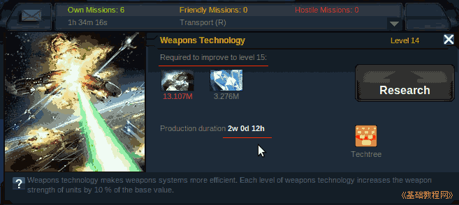

Ogame 银河帝国游戏新手入门
作者：TeliuTe 来源：基础教程网
研究科技所需的时间，取决于研究实验室的等级，可以把各个星球上的实验室连接在一起；
1）进入 http://ogame.org，点右上角红色的“Login”登录；
2）在出来的登录框中，依次选择自己的星球，输入用户名、密码后点“Login”登录；
3）升级科研技术所需的时间，取决于研究实验室的等级，点左侧列表的“Facilities”设施中的 Research Lab；

4）随着研究技术的等级不断提高，单个的研究实验室已经显得非常缓慢，这时可以研究网络实验室技术；
5）点击第五个“Research”研究链接，选择下边中间的Intergalactic Research Network；

6）研究星际实验室技术，需要“设施”中的研究实验室达到10级，计算机技术达到8级，超空间科技(Hyperspace Technology)达到8级；

7）星际实验室每升高一级就可以增加一个殖民星的研究实验室的等级，也就是把两个星球的研究实验室的等级加在一起；
8）在研究科技时，所花费的时间将会按照所有星球研究实验室总和的等级来算，当然每个星球单独也能研究此项科技；

本节学习了升级星际实验室科技的基本操作，如果你成功地完成了练习，请继续学习下一课内容；
本教程由86团学校TeliuTe制作|著作权所有
基础教程网：http://teliute.org/
美丽的校园……
转载和引用本站内容，请保留作者和本站链接。